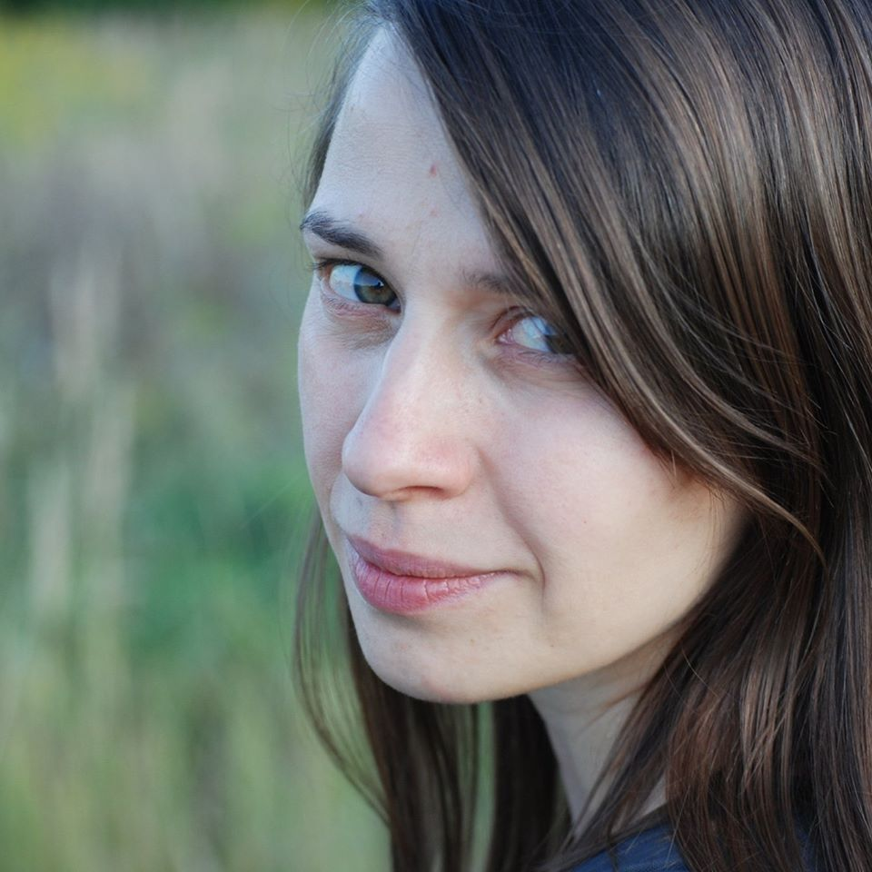

Svitlana Kalmutska

PERSONAL DETAILS
Nauky avenue 80А/73 flat 24
Kyiv, Ukraine
380969063486
svitlachok.k@gmail.com
Pages in social networks: Facebook
PERSONAL SUMMARY
Purposeful and ambitious seeker of new knowledge. Principled on issues that I consider important. Meticulous
about the little things, if they are mistakes, inaccuracies, distortions of truth. I am convinced that I have a
lot of unrealized abilities and talents.
KEY SKILLS AND COMPETENCIES
- organization skills
- business correspondence and communication skills
- work skills that require concentration and concentration
LANGUAGE PROFICIENCY
- Russian, Ukrainian - native
- English - level B1
WORK EXPERIENCE
- April 2019 - May 2020: content manager of educational sites, freelance
- December 2016 - June 2018: manager for work and communication with clients, Tuba-Duba space
- June 2009 - May 2010: TV translations (English - Ukrainian), freelance
ACADEMIC QUALIFICATIONS
- National University of Kyiv-Mohyla Academy, Kyiv – incomplete higher education, specialty Philosophy
09. 2005 – 07. 2008
- FPU Institute of Tourism, Kyiv – incomplete higher education, specialty Tourism Manager 09. 2002 –
07.
2005
(with a break for academic leave from 01. 2004 to 01. 2005)
- Secondary school-gymnasium № 9, Starokostiantyniv, Khmelnytsky region – complete secondary
education
09. 1992 – 06. 2002
I've got a letter for you